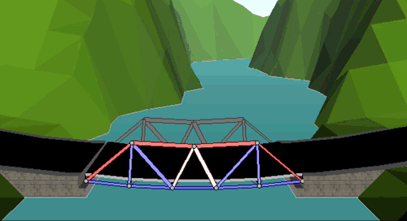

Mar 8
After many, many, many, far too many reboots, I have finished this site. Actually, it's more accurate to say that I am finished with this site. I just don't care anymore. Things will never be perfect, never exactly how I want, never the perfect font, never responsive enough, never slim enough, never sleek enough. So I have given up.
Look at this. 310 commits. > 13,000 additions, and nearly as many deletions. The definition of a time sink, exactly the type of quid-pro-quo productivity that I try to avoid. (If you don't know, Quid Pro Quo productivity is what I like to call the process of doing something which feels productive to escape the real, more pressing, responsibilities). I've also given up on policing myself in terms of content. I had some rose tinted fantasy about a text only website in the year 2019, which bordered on luddism. From now on I will post anything, text, image, gif, whatever.
If you can't tell already, this is raw, unfiltered, rough. I'm sure some things that I throw up on this site will be a little more polished, but I realized my perfectionist side was preventing me from posting anything here.
So what's new?
Spring break started today. All I had was one recitation class before freedom. Most people in my CHE 121 class seem very confused about the units of various rates, but with a little algebra it's super easy to derive.
Imagine you are trying to find the units for a second order reaction rate.
We are looking for the units of k, and we know that the units can be whatever we want, as long as we end up with:
Since we also know that the [A] represents the concentraion of the solution, and has units of Molarity, we can set up the following:
I did nothing useful today. I played west point bridge designer, a great game. Here's a gif of my $192,000 bridge.
